▲ 아티스널 버건디 매트 색상의 더 뉴 그랜저 2.5 캘리그래피. 2026년 5월 출시된 7세대(GN7) 부분변경 모델이다 ⓒ Damian B Oh, Wikimedia Commons (CC BY-SA 4.0)
그랜저라는 이름에는 늘 설명이 따라붙습니다. '부장님 차', '법인차', '성공의 상징'. 그런데 정작 이 차를 며칠씩 몰아본 기자들은 무엇을 봤을까요.
현대차 그랜저는 파업에 따른 생산 차질 속에서도 2026년 8월 국내에서 5,931대가 팔려, 현대차 세단 가운데 가장 많은 판매량을 기록했습니다(현대차 8월 판매실적, 머니투데이 보도). 이 수치 뒤에 있는 차는 5월 14일 출시된 7세대(GN7) 부분변경 모델 '더 뉴 그랜저'입니다. 현대자동차 공식 보도자료로 출시 사실과 파워트레인 구성을 먼저 확인했고, 그다음 5월 말부터 9월 말까지 나온 부분변경 모델의 국내외 시승기·리뷰 11편을 중심으로, 참고용 2022년 초기형 3.5 시승기 1편과 공개된 오너 평가 2건을 더해 한 기사로 재구성했습니다. CarPrism이 직접 시승한 기사가 아니라, 다른 매체들이 타 보고 쓴 평가를 교차 비교한 종합 기사라는 점을 먼저 밝힙니다. 가격과 제원은 모두 현대차 공식 가격표·카탈로그(9월 27일 홈페이지 게시본)로 다시 확인했습니다.
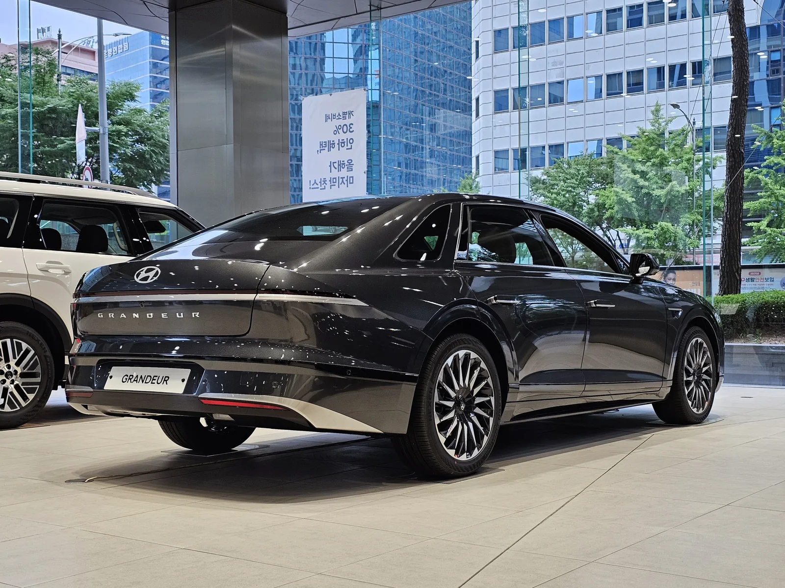
▲ 녹턴 그레이 메탈릭 색상의 더 뉴 그랜저 2.5 캘리그래피 후측면. 차체 폭 전체를 가로지르는 얇은 테일램프가 특징이다 ⓒ Damian B Oh, Wikimedia Commons (CC BY-SA 4.0)
1. 매체별 한 줄 평가 — 11편과 참고 1편을 한 표로
부분변경 모델 시승기는 출시 직후인 5월 말에 2.5 가솔린 위주로 먼저 쏟아졌고, 하이브리드는 인증과 생산 일정 때문에 7월 말 이후에야 본격적으로 나왔습니다. 그래서 2.5 가솔린과 하이브리드 시승기는 각각 여러 편인 반면, 3.5 가솔린을 부분변경 모델로 시승한 기사는 이번 취합 기간(5월 14일~9월 27일) 동안 찾지 못했습니다. 3.5는 엔진이 초기형과 같다는 점을 감안해 2022년 초기형 시승기 1편을 참고용으로만 넣었습니다.
| 매체(게재일) | 시승 모델 | 좋았던 점 | 아쉬운 점 |
|---|---|---|---|
| MTN 머니투데이방송 (5/31) | 2.5 가솔린 | 부드러운 가속과 변속, 17인치 화면 분할 표시 | 뚜렷한 지적 없음 |
| 조선비즈 (5/31) | 2.5 가솔린 | 노면 정보가 크게 전달되지 않는 편안한 주행, 화면 분할, 넉넉한 2열 | 글레오 AI가 여러 번 불러야 반응, 하드 플라스틱 도어 트림, 고속 가속 때 한 번 끊기는 느낌 |
| 글로벌모빌리티 (5/31) | 2.5 캘리그래피 | 차음유리 효과, 전자제어 서스펜션의 롤·피칭 억제, 반자율 주행 완성도 | 고회전 엔진음과 가속력, 2열 쿠션이 단단함, 음성인식 오류 |
| 탑라이더 (6/2) | 2.5 캘리그래피 | 60km/h 전후 일상 주행의 소음·승차감, 신차급 디지털 경험 | 풀가속 시 펀치 부족, 2열 쿠션, 가격 인상, 트렁크 여는 방식 |
| 오토헤럴드 (7/29) | 1.6T 하이브리드 | 노면 충격을 걸러내는 승차감, 엔진 개입이 거의 느껴지지 않는 하이브리드 | 고속 재가속력, 물리 버튼 감소로 화면 의존도 증가 |
| 글로벌오토뉴스 (8/5) | 1.6T 하이브리드 | 엔진 소음을 접할 일이 적은 정숙성, 하이브리드에 들어간 2열 리클라이닝 | 정체 구간 연비(10km 7.5km/L), 저속 모터·엔진 전환 이질감, 터치 화면 의존에 따른 시선 분산 |
| 전자신문 (8/13) | 1.6T 하이브리드 | 연비(약 100km 20.9km/L), 조용하고 부드러운 승차감, 480L 트렁크 | 뚜렷한 지적 없음 |
| 동행미디어 시대 (9/26) | 1.6T 하이브리드 | 정숙성, 2열 리클라이닝·통풍, 골프백 2개 적재 | 글레오 AI가 말을 다 알아듣지 못함, 정보가 많은 화면 |
| Jalopnik(미국, 9/9) | 2.5 가솔린 | 디자인, 편안한 1열·승차감, 플레오스 커넥트의 반응성 | 엔진 출력 부족, 롤이 큰 핸들링, 송풍구 조절이 화면 속으로, 2열 머리공간·하단 하드 플라스틱 |
| CarExpert(호주, 9/15) | 2.5 캘리그래피 | 출렁이지 않는 매끄러운 승차감, 조용하고 여유로운 시내 주행, 480L 트렁크·2열 편의 | 밀어붙이면 힘이 모자란 2.5, 방향지시등 같은 칼럼식 변속 레버 |
| TopElectricSUV(인도, 7/14) | 정적 리뷰(부산모빌리티쇼 전시차, 주행 없음) | 시트 지지감, 소재·마감 | 키 큰 성인 기준 2열 머리공간, 하단 하드 플라스틱 |
| 탑라이더 (2022/12/9, 참고) | 초기형 3.5 HTRAC 캘리그래피 | 무게감 있는 셋업, 정숙성·승차감 '제네시스급' | 센터 터널·롱 보닛 설계로 이전 세대보다 줄어든 2열 레그룸, 주행 모드 간 승차감 차이 작음 |
표를 보면 방향은 선명합니다. 칭찬은 '편안함'에, 불만은 '2.5 엔진'과 '새 인터페이스'에 몰려 있습니다. 현대차 초청으로 서울을 찾아 2.5 모델을 짧게 몰아본 미국 Jalopnik은 제목부터 "보기엔 멋지지만 운전은 별로"라는 취지로 뽑았는데, 본문을 보면 불만의 대부분이 2.5 엔진과 핸들링을 향해 있고 승차감 자체는 편안했다고 인정합니다. 스포티한 세단을 기대한 미국 기자와, 조용한 이동을 기대한 한국 기자의 온도 차이로 읽는 편이 정확합니다.
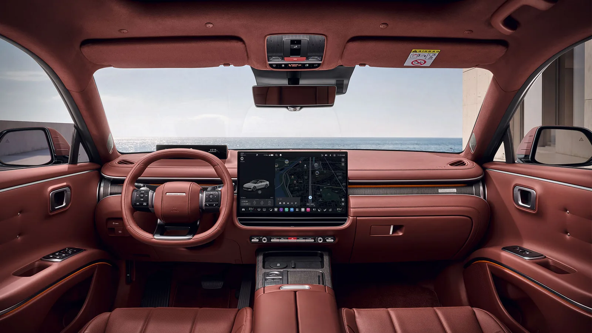
▲ 뒷좌석 쪽에서 바라본 더 뉴 그랜저 캘리그래피(버건디 원톤 내장)의 앞쪽. 운전석 앞 9.9인치 슬림 디스플레이와 17인치 중앙 화면, 그 아래 공조·비상등 물리 버튼 줄이 보인다 사진=현대자동차
2. 합의도 — 몇 개 매체가 같은 말을 했나
한 매체의 인상은 우연일 수 있지만, 여러 매체가 같은 지점을 짚었다면 신뢰도가 올라갑니다. 부분변경 모델을 실제로 주행한 10편(국내 8편 + 미국·호주 2편)을 기준으로 같은 평가가 몇 번 나왔는지 세어 봤습니다. 정적 리뷰와 2022년 초기형 시승기는 이 집계에서 뺐습니다.
| 평가 항목 | 언급 매체 수 | 판단 |
|---|---|---|
| 승차감·정숙성 우수 | 10 / 10 | 이견 없음. 그랜저의 핵심 가치 |
| 17인치 화면·플레오스 커넥트 긍정 | 8 / 10 | 화면 크기·반응성은 호평, 조작 방식은 별개 문제 |
| 2열 공간·리클라이닝 호평 | 5 / 10 | 하이브리드 시승기에서 특히 자주 등장 |
| 2.5 가솔린 가속력 부족 | 5 / 6 (2.5 시승 기준) | 국내 3편·해외 2편. 조선비즈는 '큰 단점은 아니다'라고 단서를 달았고, 해외 매체일수록 더 강하게 지적 |
| 글레오 AI 음성인식·기능 미숙 | 4 / 10 | "여러 번 불러야", "다 알아듣지 못했다", 할 수 있는 기능이 아직 제한적 |
| 물리 버튼 감소·화면 의존 | 3 / 10 | 송풍구 방향 조절 등 일부 조작이 화면 속으로 들어간 점(오토헤럴드·글로벌오토뉴스·Jalopnik) |
| 하이브리드 도심 실연비가 공인 이상 | 2 / 4 (하이브리드 시승 기준) | 단, 정체 구간 측정에서는 7.5km/L |
| 2열 방석이 단단함 | 2 / 10 | 둘 다 2.5 캘리그래피 시승기 |
| 일부 내장재가 하드 플라스틱 | 2 / 10 | 도어 트림·하단 마감 |
📍 표 읽는 법
'2열 방석이 단단하다'는 지적은 2편뿐이지만 둘 다 같은 트림(2.5 캘리그래피)에서 나왔습니다. 반대로 하이브리드 시승기 4편에서는 2열 리클라이닝·통풍 시트를 장점으로 든 경우가 많았습니다. 뒷좌석 평가는 트림과 선택 품목에 따라 달라진다고 보는 게 맞습니다. 정숙성 칭찬은 60km/h 전후 도심 주행에서 특히 반복됐습니다.
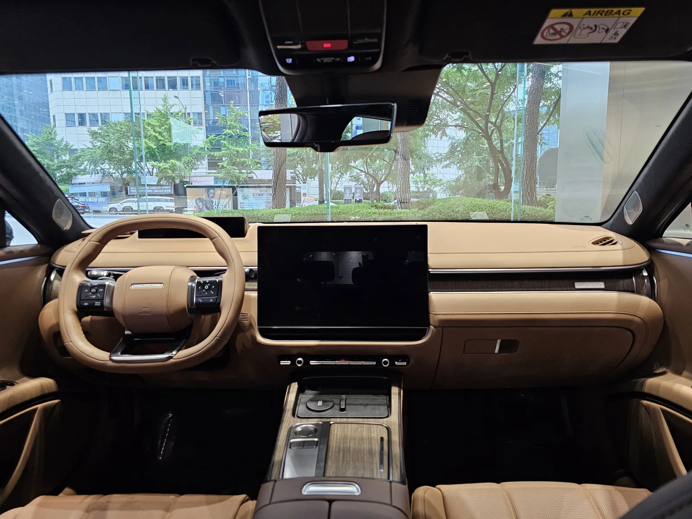
▲ 더 뉴 그랜저 캘리그래피(브라운 원톤) 실내. 계기판 자리에 9.9인치 슬림 디스플레이, 중앙에 17인치 플레오스 커넥트 화면이 들어갔다 ⓒ Damian B Oh, Wikimedia Commons (CC BY-SA 4.0)
3. 2.5 · 3.5 · 하이브리드, 무엇을 고를까 — 공식 제원 vs 시승기 체감
더 뉴 그랜저의 파워트레인은 가솔린 2.5, 가솔린 3.5, LPG 3.5, 가솔린 1.6 터보 하이브리드 네 가지입니다. 이 가운데 부분변경으로 실제로 바뀐 것은 하이브리드뿐입니다. 현대차는 이 모델을 "세단 최초로 차세대 하이브리드 시스템을 적용"한 차로 소개했는데, 시동·발전·구동 보조를 맡는 P1 모터와 구동·회생제동을 맡는 P2 모터를 함께 쓰는 구조입니다. 2.5와 3.5 가솔린은 엔진 제원이 이전과 같습니다.
| 항목 | 2.5 가솔린 | 3.5 가솔린 | 1.6T 하이브리드 |
|---|---|---|---|
| 최고출력 | 198마력 | 300마력 | 시스템 239마력(엔진 180마력 + 모터 47.7kW) |
| 최대토크 | 25.3kgf·m | 36.6kgf·m | 엔진 27.0kgf·m, 모터 250Nm |
| 변속기·구동 | 8단 자동, 전륜 | 8단 자동, 전륜 또는 HTRAC 사륜 | 6단 자동, 전륜 |
| 공인 복합연비 | 11.6km/L(18인치) 11.0km/L(20인치) | 10.0km/L(2WD 18인치) 8.9km/L(AWD 20인치) | 18.4km/L(18인치) 15.9km/L(20인치) |
| 시승기 실측 | 12.0km/L(글로벌모빌리티, 하남~춘천 왕복 약 125km) | 부분변경 시승기 없음 | 20.9km/L(전자신문, 약 100km) 19~20km/L 안팎(오토헤럴드, 서울 도심 위주·계기판 표시) 7.5km/L(글로벌오토뉴스, 정체 10km) |
| 연료탱크 · 트렁크(VDA) | 60L · 480L | 60L · 480L | 50L · 480L |
※ 공인 연비는 빌트인 캠 미적용 기준. 빌트인 캠을 달면 18인치 기준 2.5 가솔린 11.4km/L, 하이브리드 17.7km/L로 낮아진다(현대차 가격표).
2.5 가솔린은 '조용하지만 힘은 딱 거기까지'라는 평가가 모입니다. 국내 매체는 일상 속도에서의 부드러움을 먼저 칭찬했고(MTN, 조선비즈), 아쉬움은 고속 합류나 풀가속 같은 특정 상황에 한정해 이야기했습니다. 글로벌모빌리티는 시원한 가속을 원한다면 3.5나 하이브리드가 더 나은 선택이라고 정리했습니다. 해외 매체의 표현은 더 직설적입니다. Jalopnik은 동승자를 태운 고속도로 합류에서 힘이 달린다고 했고, 호주 CarExpert는 가속 페달을 끝까지 밟으면 엔진 소리만 멀리서 커질 뿐 그 이상은 별로 나오지 않는다고 적었습니다. 공차중량 1,600kg(18인치)에 198마력이라는 숫자를 보면 이상한 결론은 아닙니다.
하이브리드는 이번 부분변경의 주인공입니다. 현대차가 기술 설명회에서 밝힌 수치(딜사이트 보도)에 따르면 시스템 출력은 230마력에서 239마력으로, 0→100km/h 가속은 8.3초에서 8.0초로, 80→120km/h 추월 가속은 5.4초에서 5.2초로 개선됐고 시동 진동은 51% 줄었습니다. 시승기들이 가장 많이 쓴 단어도 '정숙성'입니다. 오토헤럴드는 하이브리드 시스템이 개입하는 순간을 일부러 의식하지 않으면 거의 느끼지 못할 정도라고 평가했습니다. 다만 같은 오토헤럴드가 고속에서 강한 재가속이 필요할 때는 기대만큼 힘을 내지 못한다고 지적했고, 글로벌오토뉴스는 저속에서 모터와 엔진이 바통을 넘길 때의 미세한 이질감을 언급했습니다.
3.5 가솔린은 부분변경 모델 시승기가 없어 판단 근거가 가장 약합니다. 엔진과 변속기는 초기형과 같으므로, 2022년 탑라이더의 초기형 3.5 HTRAC 시승기를 참고할 수 있습니다. 당시 탑라이더는 프리뷰 전자제어 서스펜션이 달린 캘리그래피를 타고, 무게감을 강조한 셋업 덕에 후륜구동 기반 제네시스 G80과 비슷한 승차감을 낸다고 평가했습니다. 반면 솟아오른 센터 터널과 롱 보닛 설계 때문에 6세대 후기형보다 2열 레그룸이 줄었다는 점도 함께 짚었습니다. 부분변경 모델은 서스펜션이 손질됐기 때문에(뒤의 4장 참고) 이 인상을 그대로 대입하기는 어렵습니다.
📍 '7.5km/L'과 '20.9km/L', 둘 다 맞는 숫자다
하이브리드 실연비가 매체마다 세 배 가까이 차이 나는 이유는 측정 조건입니다. 글로벌오토뉴스의 7.5km/L은 꽉 막힌 정체 구간 약 10km만 떼어 잰 값이고, 기자 스스로 "한정되고 특수한 주행환경"이라고 단서를 달았습니다. 전자신문의 20.9km/L은 수도권과 남양주 일대 약 100km를 달린 결과입니다. 하이브리드는 짧고 막히는 구간에서 배터리 잔량에 따라 엔진이 자주 개입하고, 흐름이 있는 도심·국도에서 효율이 크게 오릅니다. 출퇴근 경로가 어떤지가 연비를 결정한다는 뜻입니다.
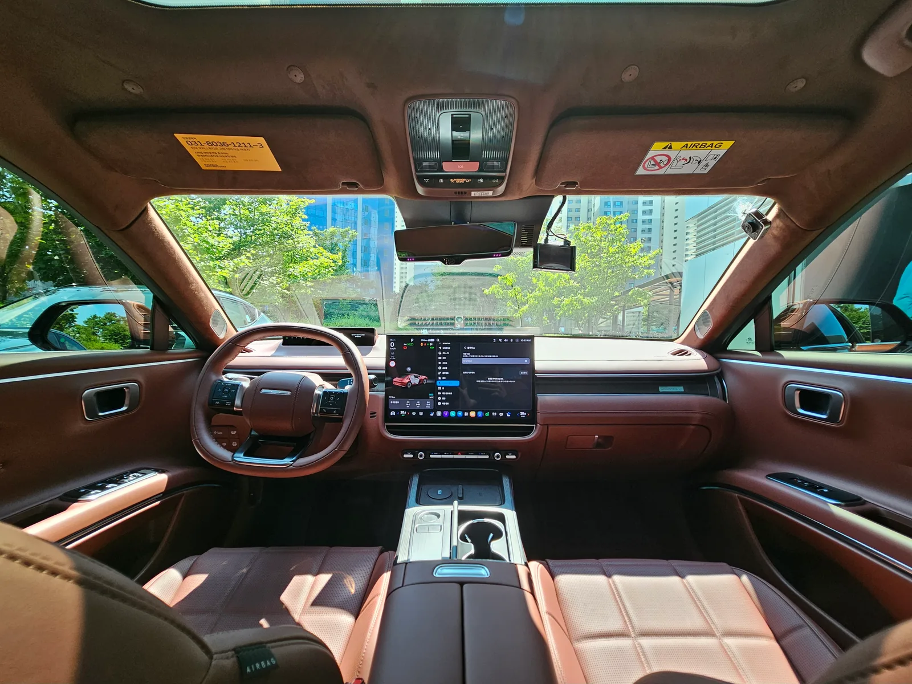
▲ 더 뉴 그랜저 하이브리드 캘리그래피(버건디 원톤 내장)의 앞좌석. 가솔린 모델과 같은 레이아웃에 하이브리드 전용 정보가 화면에 표시된다 ⓒ Damian B Oh, Wikimedia Commons (CC BY-SA 4.0)
4. 승차감·정숙성·뒷좌석 — '부장님 차'의 진짜 무기
그랜저를 두고 시승기들이 한목소리를 낸 대목은 결국 편안함입니다. 탑라이더는 60km/h 전후 일상 주행에서의 소음 유입과 승차감 완성도를 "최상급"으로 표현했고, 전자신문은 승차감을 한마디로 "조용하고 부드럽다"고 정리했습니다. 호주 CarExpert는 출렁이지 않고 매끄럽게 자리 잡힌 승차감을 전자제어 서스펜션 덕으로 봤는데, 서울 도로 노면이 좋아 승차감을 깊이 시험해 보지는 못했다는 단서도 함께 달았습니다.
이 평가에는 하드웨어 근거가 있습니다. 공식 가격표를 보면 모든 트림에 1·2열 도어와 윈드쉴드, 리어 쿼터까지 이중접합 차음유리가 기본입니다. 현대차는 부분변경에서 전방 노면을 미리 읽는 프리뷰 전자제어 서스펜션을 19인치 휠까지 확대 적용했고, 가감속 시 차체 움직임을 줄이는 제어도 더했다고 밝혔습니다. 글로벌모빌리티가 코너와 가감속에서 롤·피칭이 잘 억제된다고 쓴 대목이 이 장비와 맞물립니다. 다만 이 서스펜션은 캘리그래피에만 기본이고, 익스클루시브에서는 '플래티넘' 선택 품목(205만원)에 묶여 있습니다.
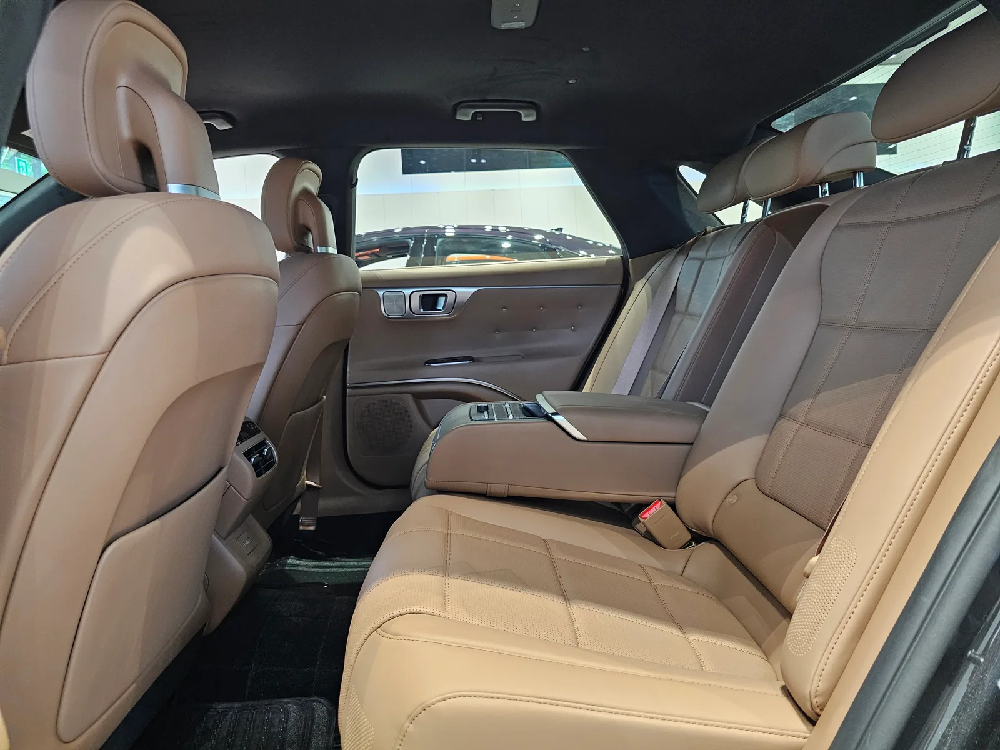
▲ 더 뉴 그랜저 캘리그래피의 2열. 휠베이스는 2,895mm로 이전과 같다 ⓒ Damian B Oh, Wikimedia Commons (CC BY-SA 4.0)
뒷좌석은 트림과 파워트레인에 따라 평가가 갈렸습니다. 이번 부분변경에서 눈에 띄는 변화는 하이브리드에도 2열 전동 리클라이닝이 생겼다는 점입니다. 하이브리드는 2열 시트 가까이에 배터리가 자리해 등받이를 눕힐 공간을 만들기 어려웠습니다. 딜사이트·글로벌오토뉴스 보도에 따르면 현대차는 시트 장착 위치를 앞으로 37mm 옮기고 배터리 프레임 높이를 약 32mm 낮추는 식으로 이를 해결했습니다. 하이브리드 시승기에서 2열 칭찬이 많았던 이유입니다. 반면 2.5 캘리그래피를 탄 탑라이더와 글로벌모빌리티는 2열 방석이 단단하다고 했고, 글로벌모빌리티는 등받이를 눕힐 때 다리가 들리는 느낌이 어색하다고 덧붙였습니다.
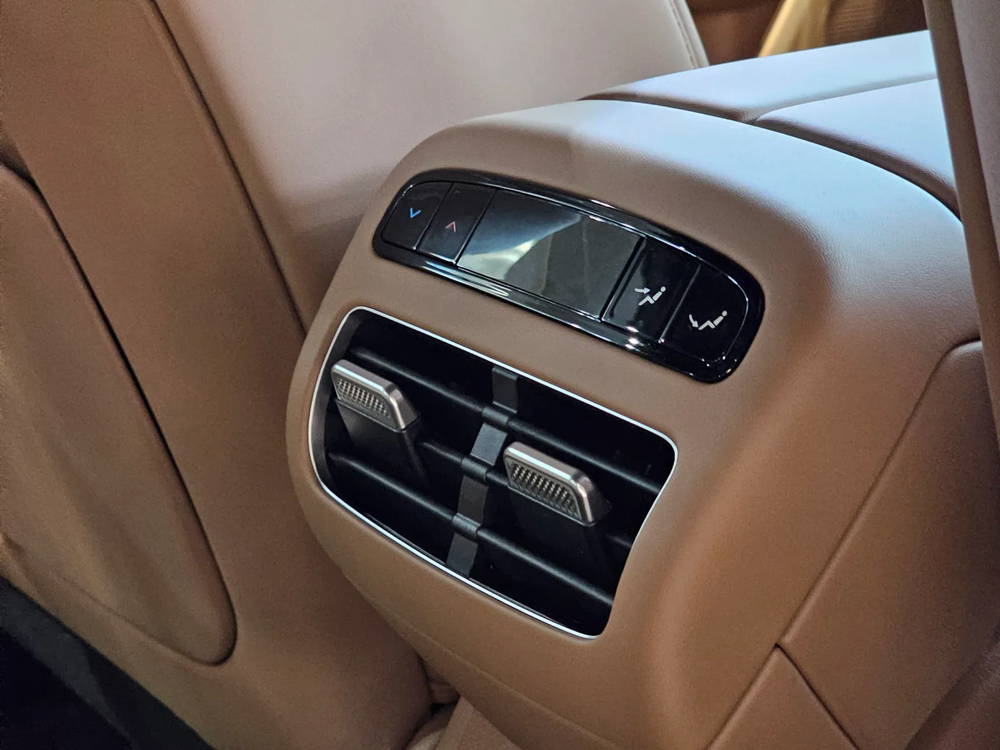
▲ 1열 콘솔 뒤편의 2열 송풍구와 공조 조작부. 캘리그래피는 3존 독립 공조가 기본이다 ⓒ Damian B Oh, Wikimedia Commons (CC BY-SA 4.0)
✅ 뒷좌석을 자주 쓴다면 계약서에서 확인할 것
· 2열 리클라이닝은 기본이 아님: 가솔린 익스클루시브는 '시트 컴포트Ⅰ'(120만원), 하이브리드 익스클루시브는 '시트 컴포트Ⅱ'(185만원, 빌트인 캠 2 Plus 포함. 이 경우 18인치 공인 연비는 17.7km/L), 캘리그래피는 '시트 컴포트 플러스'(150만원)
· 2열 통풍: 캘리그래피 기본, 익스클루시브는 위 시트 컴포트 품목에 포함
· 2열 전동 도어커튼: 캘리그래피의 '시트 컴포트 플러스'에만 포함
· 프리뷰 전자제어 서스펜션: 캘리그래피 기본, 익스클루시브는 '플래티넘'(205만원, 19인치 휠 포함)
· 키 큰 성인: 인도 TopElectricSUV는 전시차 정적 리뷰에서, 미국 Jalopnik은 시승 중 2열에 앉아 본 뒤 머리공간 여유가 크지 않다고 지적. 루프가 뒤로 흐르는 쿠페형 실루엣이라 직접 앉아 보는 편이 안전
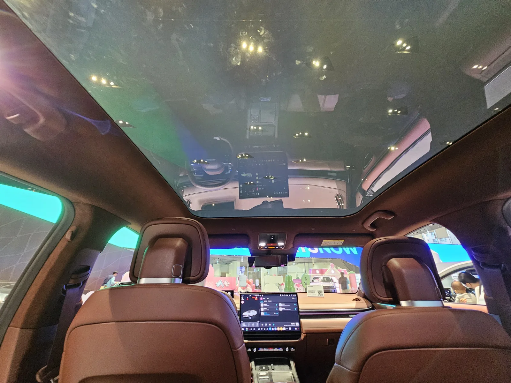
▲ 2열에서 올려다본 스마트 비전 루프. PDLC 필름으로 구역별 투명도를 바꾼다(180만원 선택 품목, 파노라마 선루프와 중복 불가) ⓒ Damian B Oh, Wikimedia Commons (CC BY-SA 4.0)
5. 2026년 9월 공식 가격표와 트림 추천
아래 가격은 9월 27일 현대차 홈페이지에 게시된 더 뉴 그랜저 가격표 기준입니다. 5월 출시 당시 발표가는 개별소비세 3.5% 기준으로 2.5 가솔린 4,185만원이었는데, 현재 게시 가격은 4,245만원으로 60만원 높습니다. 하이브리드는 친환경차 세제혜택 적용 후 가격입니다. 부분변경 모델 트림은 프리미엄·익스클루시브·캘리그래피에 블랙 잉크가 더해진 구성입니다. 2025년 5월 2026년형에 신설됐던 스페셜 트림 '아너스'는 부분변경 가격표에 없습니다.
| 파워트레인 | 프리미엄 | 익스클루시브 | 캘리그래피 | 블랙 잉크 |
|---|---|---|---|---|
| 2.5 가솔린 | 4,245 | 4,694 | 5,310 | 5,400 |
| 3.5 가솔린(2WD) | 4,491 | 4,941 | 5,557 | 5,647 |
| 1.6T 하이브리드(세제혜택 후) | 4,833 | 5,282 | 5,899 | 5,989 |
| LPG 3.5 | 4,393 | 4,842 | - | - |
※ 3.5 가솔린은 가격표상 '스마트스트림 가솔린 3.5 엔진' 선택 품목가(247만원, 프리미엄은 246만원)를 2.5 가격에 더해 계산. HTRAC 사륜구동은 3.5 선택 시 220만원 추가. 하이브리드 세제혜택 전 가격은 프리미엄 4,933만원부터.
같은 트림이라면 하이브리드는 2.5 가솔린보다 약 588만원, 3.5 가솔린은 약 246만원 비쌉니다. 하이브리드의 가격 차이를 기름값으로 메우려면 얼마나 타야 할까요. 공인 복합연비(18인치)로 연 1만5,000km를 달린다고 가정하면 2.5 가솔린은 약 1,293L, 하이브리드는 약 815L를 씁니다. 차이는 연 478L 정도로, 마이클이 집계에 쓴 9월 평균 휘발유값(L당 1,856원)을 적용하면 한 해 약 89만원입니다. 단순 계산으로는 6년 반 남짓 걸리는 셈입니다. 연 2만5,000km를 넘게 타거나 도심 흐름 주행이 많아 시승기처럼 20km/L 안팎이 나온다면 기간은 크게 짧아집니다. 반대로 연 1만km 이하라면 가격 차이를 연비로 회수하기 어렵습니다.
| 용도 | 추천 조합 | 합계 | 이유 |
|---|---|---|---|
| 연 1만km 안팎, 도심 출퇴근 | 2.5 가솔린 프리미엄 + 현대 스마트센스Ⅰ + 파킹 어시스트 | 4,555만원 | 일상 속도 정숙성은 파워트레인과 무관하게 호평. 가속 불만은 고속·풀가속 상황에 집중 |
| 주행거리 많고 가족 태우는 일 잦음 | 하이브리드 익스클루시브 + 시트 컴포트Ⅱ | 5,467만원 | 연비와 2열 리클라이닝·통풍을 동시에. 18인치 유지 시 공인 17.7km/L(시트 컴포트Ⅱ에 포함된 빌트인 캠 반영) |
| 승차감 최우선 | 하이브리드 익스클루시브 + 플래티넘 + 시트 컴포트Ⅱ | 5,672만원 | 프리뷰 전자제어 서스펜션 확보. 대신 19인치라 공인 연비가 16.9km/L(빌트인 캠 미적용 기준)로 내려감 |
| 힘과 여유, 고속 장거리 | 3.5 가솔린 익스클루시브 + 플래티넘 | 5,146만원 | 2.5의 약점인 가속력 해소. 부분변경 3.5 시승기가 없어 시승 권장 |
| 뒷좌석 VIP(쇼퍼 드리븐) | 하이브리드 캘리그래피 + 시트 컴포트 플러스 | 6,049만원 | 2열 통풍·3존 공조 기본에 리클라이닝·전동 도어커튼 추가 |
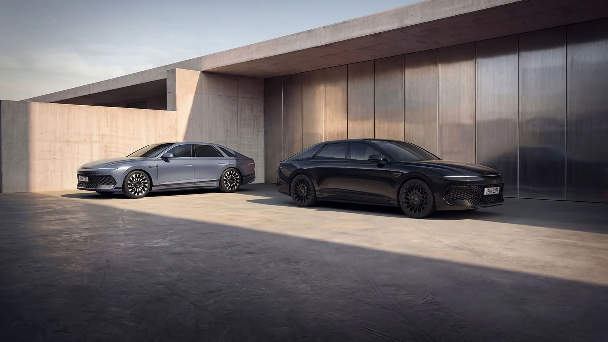
▲ 회색 외장의 더 뉴 그랜저(왼쪽)와 전용 블랙 외관 부품·20인치 블랙 휠을 단 블랙 잉크(오른쪽) 사진=현대자동차
9월에는 부분변경 이전 모델 재고에 큰 폭의 할인이 붙어 있기도 합니다. 조건이 까다로우니 그랜저 580만원 할인 조건 분석을 함께 참고하면 신형과 구형 재고 사이의 선택에 도움이 됩니다. 부분변경으로 달라진 디자인·편의사양 목록은 더 뉴 그랜저 하이브리드 변경점 기사에 따로 정리돼 있습니다.
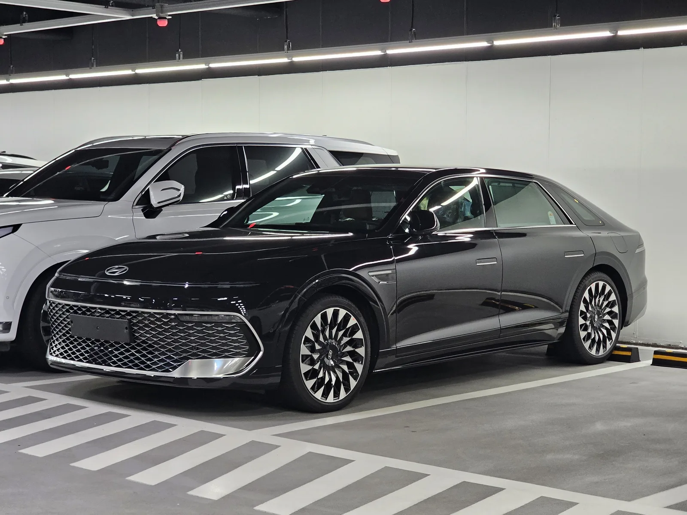
▲ 바이오필릭 블루 펄 색상의 더 뉴 그랜저 캘리그래피. 메쉬 패턴 그릴과 길어진 후드로 전장이 5,050mm가 됐다 ⓒ Damian B Oh, Wikimedia Commons (CC BY-SA 4.0)
6. K8·G80·수입 준대형 사이, 그랜저의 자리
그랜저를 고민하는 사람의 비교 목록에는 보통 기아 K8, 제네시스 G80, 렉서스 ES, 벤츠 E클래스가 함께 오릅니다. 경쟁차 가격은 제조사 공식 가격표로 확인된 것만 적었고, 이번에 가격표를 확보하지 못한 G80·E클래스는 가격 비교에서 뺐습니다.
| 모델 | 구동 기반 | 시작가(공식) | 그랜저 대비 포인트 |
|---|---|---|---|
| 현대 더 뉴 그랜저 | 전륜(3.5는 사륜 선택) | 2.5 4,245만원 / HEV 4,833만원 | 플레오스 커넥트·17인치 화면 등 최신 인포테인먼트, 차세대 하이브리드 |
| 기아 K8 | 전륜(3.5는 사륜 선택) | 2.5 3,731만원 / HEV 4,267만원(세제혜택 후) | 같은 체급·유사 파워트레인에 시작가가 500만원 이상 낮음. 마이클 오너 만족도 4.67점으로 그랜저(4.64점)와 비슷 |
| 제네시스 G80 | 후륜(사륜 선택) | 제조사 가격표 미확보(비교 생략) | 후륜 기반 주행 감각과 브랜드. 탑라이더는 초기형 3.5 그랜저의 승차감을 G80과 비슷하다고 평가 |
| 렉서스 ES | 전륜 | 신형 가격 미발표 | 렉서스코리아는 10월 13일 신형 ES(하이브리드 ES 350h, 전기차 ES 350e·500e) 국내 출시를 예고. 가격은 공식 페이지에 아직 없음. 기존 ES 300h와 비교하려면 신형 가격 발표 후가 적기 |
| 벤츠 E클래스 | 후륜 | 제조사 가격표 미확보(비교 생략) | 수입 브랜드 가치와 후륜 주행 감각. 그랜저 최상위 트림과 가격대가 겹치기 시작하는 구간 |
시승기들의 비교 대상도 흥미롭습니다. 오토헤럴드는 하이브리드 승차감에 '고가 수입차를 잊게 만든다'는 제목을 달았고, 탑라이더는 초기형 3.5 시승기에서 이미 '제네시스라 불려도 좋다'고 썼습니다. 반대로 해외 매체는 그랜저를 제네시스에 가까워진 현대차로 보면서도, 2.5 엔진으로는 그 기대를 채우기 어렵다고 봤습니다. 그랜저의 경쟁력은 '같은 돈으로 얻는 조용함과 편의사양'에 있고, 운전 재미나 브랜드 가치에서 윗급을 넘어서는 차는 아니라는 게 11편을 겹쳐 본 결론입니다. K8과는 파워트레인과 체급이 겹치는 만큼, 시작가 차이와 인포테인먼트 세대 차이를 두고 저울질하게 됩니다.
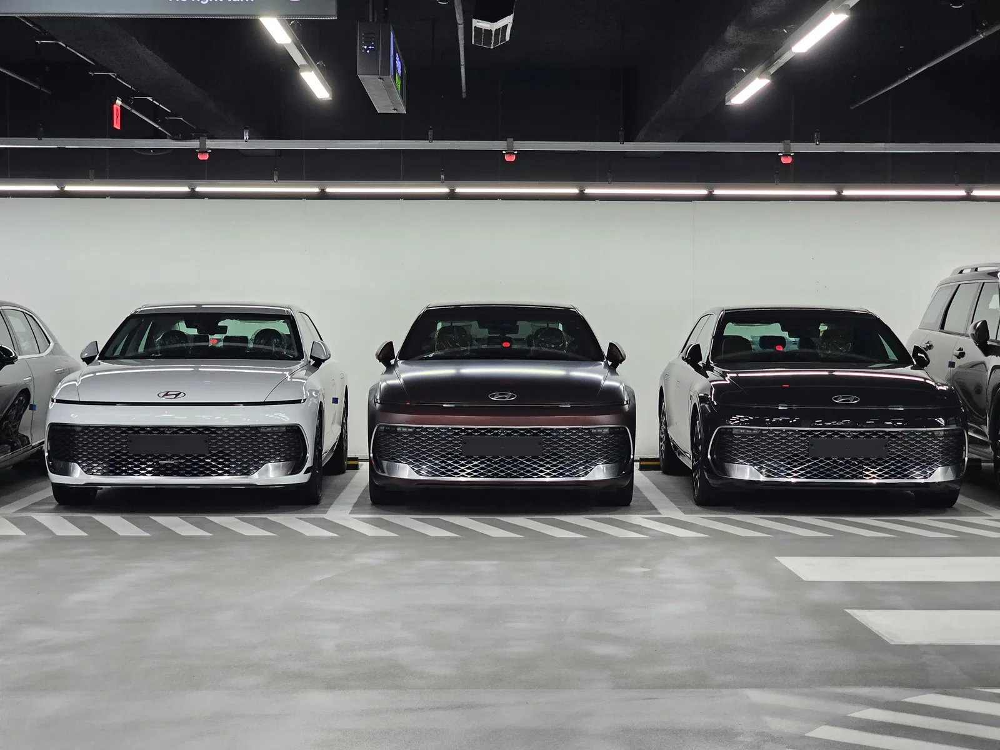
▲ 색상별로 나란히 선 더 뉴 그랜저 세 대. 부분변경 모델은 매트 색상 3종을 포함해 외장 10색으로 운영된다 ⓒ Damian B Oh, Wikimedia Commons (CC BY-SA 4.0)
7. 안전·보증·리콜 — 공식 자료로 본 체크포인트
시승기에는 잘 나오지 않지만 구매 판단에 필요한 항목을 공식 자료로 확인했습니다. 부분변경 모델만의 충돌 평가는 아직 나오지 않아, 같은 7세대(GN7)가 받은 2023년 결과를 참고로 적습니다.
| 평가 분야 | 점수 | 득점률 |
|---|---|---|
| 충돌 안전성(60점) | 58.153점 | 96.9% |
| 외부 통행자 안전성(20점) | 15.801점 | 79.0% |
| 사고 예방 안전성(20점) | 15.240점 | 76.2% |
| 종합 | 89.2점 | 종합 1등급 |
그랜저는 2023년 대국민 투표에서 가장 많은 표를 얻어 평가 차종에 들어갔고, 충돌 안전성에서 만점에 가까운 점수를 받았습니다. 상대적으로 낮은 쪽은 보행자 보호와 사고 예방 분야였습니다. 부분변경 모델은 운전자 보조 기능 일부가 바뀌었기 때문에, 이 점수를 그대로 부분변경 모델 점수로 볼 수는 없습니다.
- 하이브리드 전용 부품 보증: 현대차 카탈로그 기준 전기구동모터·하이브리드 고전압 배터리·HPCU(하이브리드 전력 제어기)는 10년 20만km(먼저 도래하는 쪽) 무상 보증. 연 2만km 넘게 타는 하이브리드 구매자라면 확인해 둘 조건입니다.
- 리콜 이력 확인: 그랜저는 2024년 9월 국토교통부가 발표한 HECU(전자제어유압장치) 화재 우려 리콜 대상 차종에 포함된 적이 있습니다. 당시 대상과 조회 방법은 그랜저·모하비 HECU 리콜 정리 기사에 있습니다. 신차가 아닌 재고차·중고차를 고른다면 자동차리콜센터에서 차대번호로 미조치 리콜이 있는지 먼저 확인하는 편이 안전합니다.
8. 오너들은 어떻게 봤나 — 숫자로 본 만족도
시승기가 며칠의 인상이라면, 오너 평가는 몇 년치 생활의 기록입니다. 부분변경 모델은 출고 4개월 남짓이라 별도 오너 통계가 쌓이지 않았으므로, 같은 7세대(GN7) 전체의 공개 데이터를 참고했습니다.
- 마이클 '모두의 차고'(만족도 랭킹 2026년 9월 21일, 실연비 9월 25일 데이터 기준): 디 올 뉴 그랜저(GN7, 휘발유) 오너 16,937명의 만족도는 5점 만점에 4.64점으로 국내 준대형 4위. 같은 집계의 K8(GL3)은 4.67점(13,083명). 오너 실측 평균 연비는 10.11km/L로, 마이클은 이를 공인연비 11.7km/L의 약 86% 수준이라고 밝혔습니다.
- 네이버 마이카 오너평가(2024년 4월 오토트리뷴 보도 기준): 7세대 그랜저 하이브리드 종합 8.8점(10점 만점). 항목별로 주행·거주성 9.4점, 연비 9.2점, 디자인 9.0점, 품질 8.8점, 가격 7.0점.
두 데이터 모두 같은 방향을 가리킵니다. 타는 동안의 만족(주행·거주성)은 높고, 값에 대한 만족은 낮다는 것입니다. 네이버 마이카 하이브리드 평가에서 가격만 7점대로 떨어진 것은 시승기들이 가격 인상을 지적한 흐름과도 겹칩니다. 부분변경 모델은 여기서 가격이 한 번 더 올랐으니, 오너 평가의 '가격' 점수가 어떻게 움직일지는 지켜볼 대목입니다.
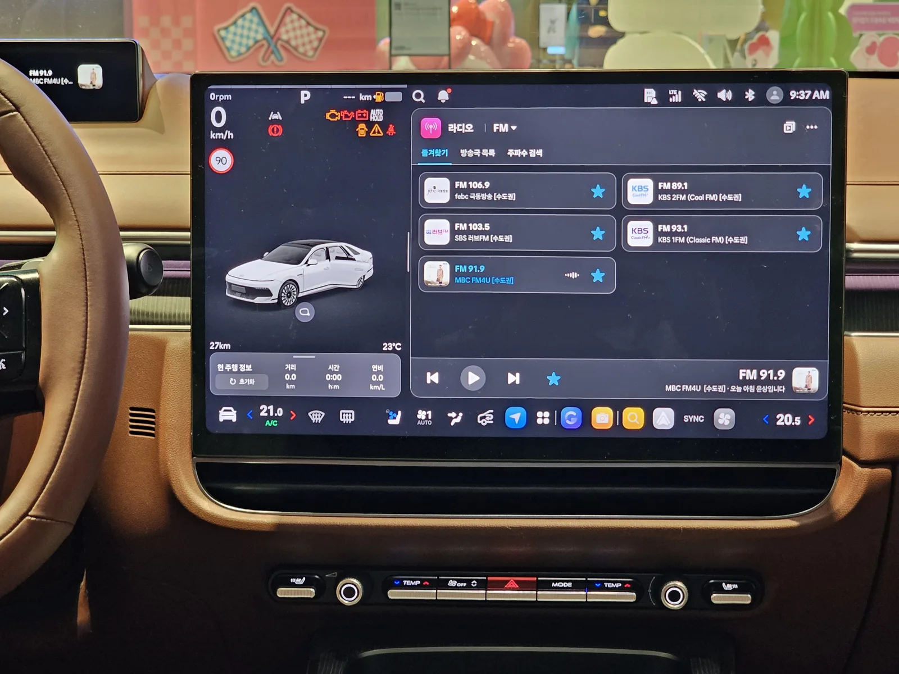
▲ 17인치 플레오스 커넥트 화면. 차량 상태와 미디어를 한 화면에 나눠 띄울 수 있고, 아래쪽에 공조 조작 버튼이 남아 있다 ⓒ Damian B Oh, Wikimedia Commons (CC BY-SA 4.0)
9. 이런 사람에게 맞고, 이런 사람에겐 안 맞는다
✅ 그랜저가 잘 맞는 사람
· 조용하고 부드러운 이동이 1순위인 사람 — 주행 리뷰 10편 전부가 인정한 장점
· 가족이나 손님을 뒷좌석에 자주 태우는 사람 — 하이브리드에도 2열 리클라이닝이 생김
· 연 1만5,000km 이상, 흐름 있는 도심·국도 주행이 많은 사람 — 하이브리드 실연비가 공인치를 웃돈 시승기가 다수
· 큰 화면과 앱 설치형 인포테인먼트, 최신 운전자 보조 기능을 중시하는 사람
⚠️ 다른 차를 먼저 보는 게 나은 사람
· 운전 재미와 날카로운 핸들링을 원하는 사람 — 해외 매체일수록 롤과 가벼운 조향을 지적
· 2.5 가솔린으로 고속도로 장거리를 자주 달리는 사람 — 2.5 시승기 6편 중 5편이 가속력 부족 지적
· 물리 버튼 조작을 선호하는 사람 — 송풍구 조작 등이 화면 속으로 들어갔고 음성비서는 아직 미숙
· 정체 구간 위주로 짧게 타는 사람 — 하이브리드라도 막히는 10km에서는 7.5km/L까지 떨어진 사례
· 같은 예산에서 브랜드 가치가 가장 중요한 사람 — 최상위 트림은 수입 준대형 엔트리와 가격대가 겹침
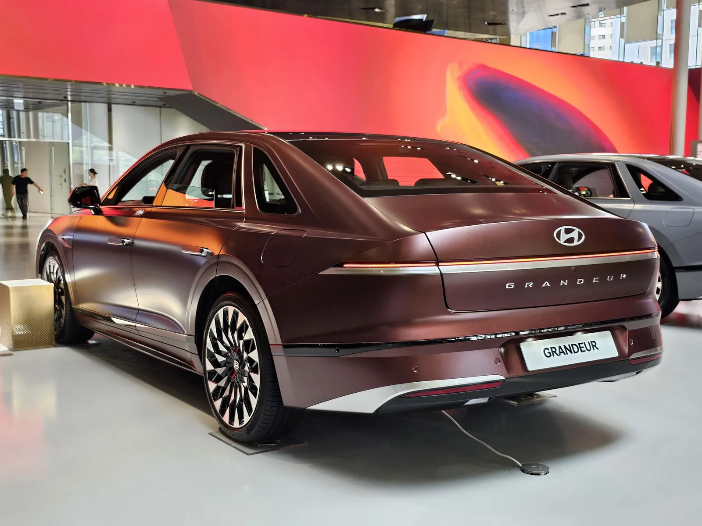
▲ 아티스널 버건디 매트 색상의 더 뉴 그랜저 후측면. 매트 색상은 30만원 추가 ⓒ Damian B Oh, Wikimedia Commons (CC BY-SA 4.0)
10. 요약
부분변경 모델 국내외 리뷰 11편을 겹쳐 보면, 더 뉴 그랜저는 '조용하고 편안한 이동'에 관해서는 이견이 없는 차입니다. 부분변경 모델을 실제로 몰아본 10편 전부가 승차감과 정숙성을 장점으로 꼽았고, 8편은 17인치 플레오스 커넥트 화면을 호평했습니다.
갈리는 지점은 파워트레인입니다. 2.5 가솔린(198마력)은 2.5 시승기 6편 중 5편에서 가속력 부족 지적을 받았고, 차세대 하이브리드(시스템 239마력, 공인 18.4km/L)는 정숙성과 도심 실연비(19~20.9km/L)로 가장 좋은 평가를 받았습니다. 부분변경 3.5 가솔린 시승기는 취합 기간 내 없었습니다.
9월 공식 가격은 2.5 가솔린 4,245만원, 3.5 가솔린 4,491만원, 하이브리드 4,833만원(세제혜택 후)부터입니다. 주행거리가 많고 뒷좌석을 자주 쓴다면 하이브리드 익스클루시브에 시트 컴포트Ⅱ(5,467만원), 연 1만km 안팎 도심 위주라면 2.5 프리미엄이 시승기 평가와 가장 잘 맞는 선택입니다. 오너 평가에서도 주행·거주성 만족은 높고 가격 만족은 낮은 흐름이 이어졌습니다. 부분변경 이전 7세대는 2023년 KNCAP 종합 1등급(89.2점)을 받았고, 하이브리드 전용 부품은 10년 20만km 보증이 붙습니다.

![[시승기 종합] "인증 501km, 실제로는?"… 국내외 14편으로 본 기아 EV3의 숫자](../images/ev3review_gtline_black_seoul.webp)